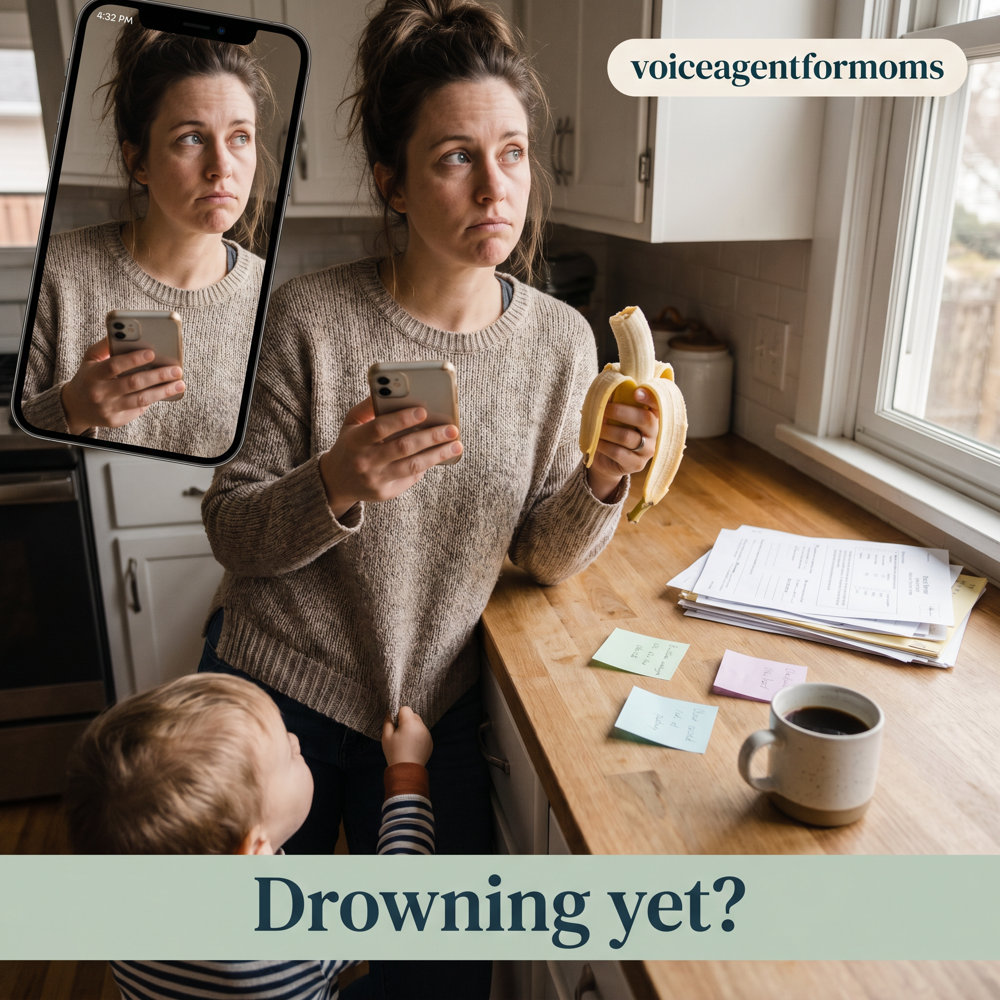
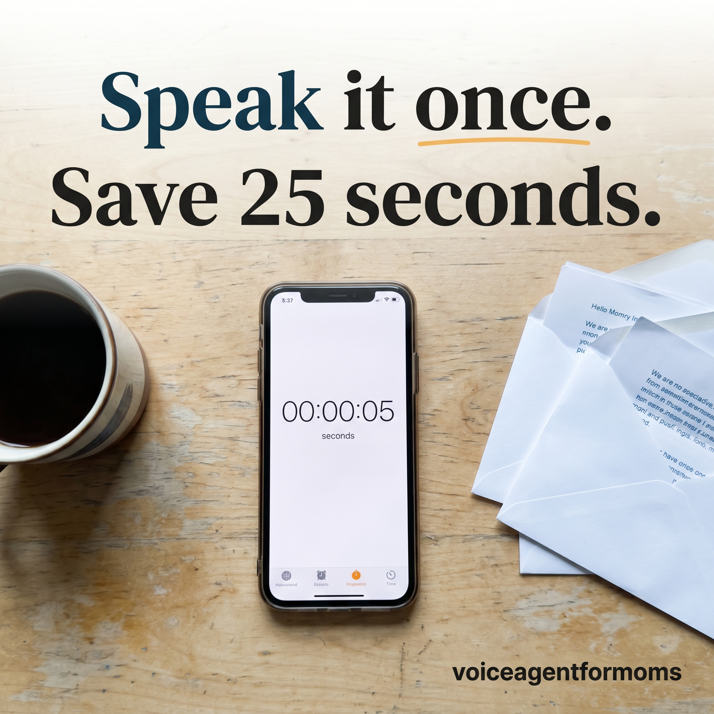
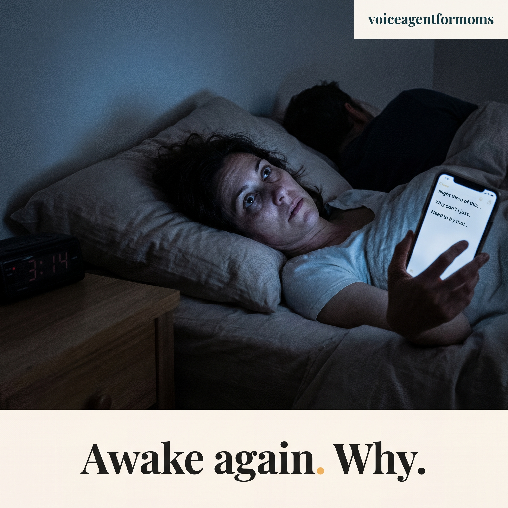
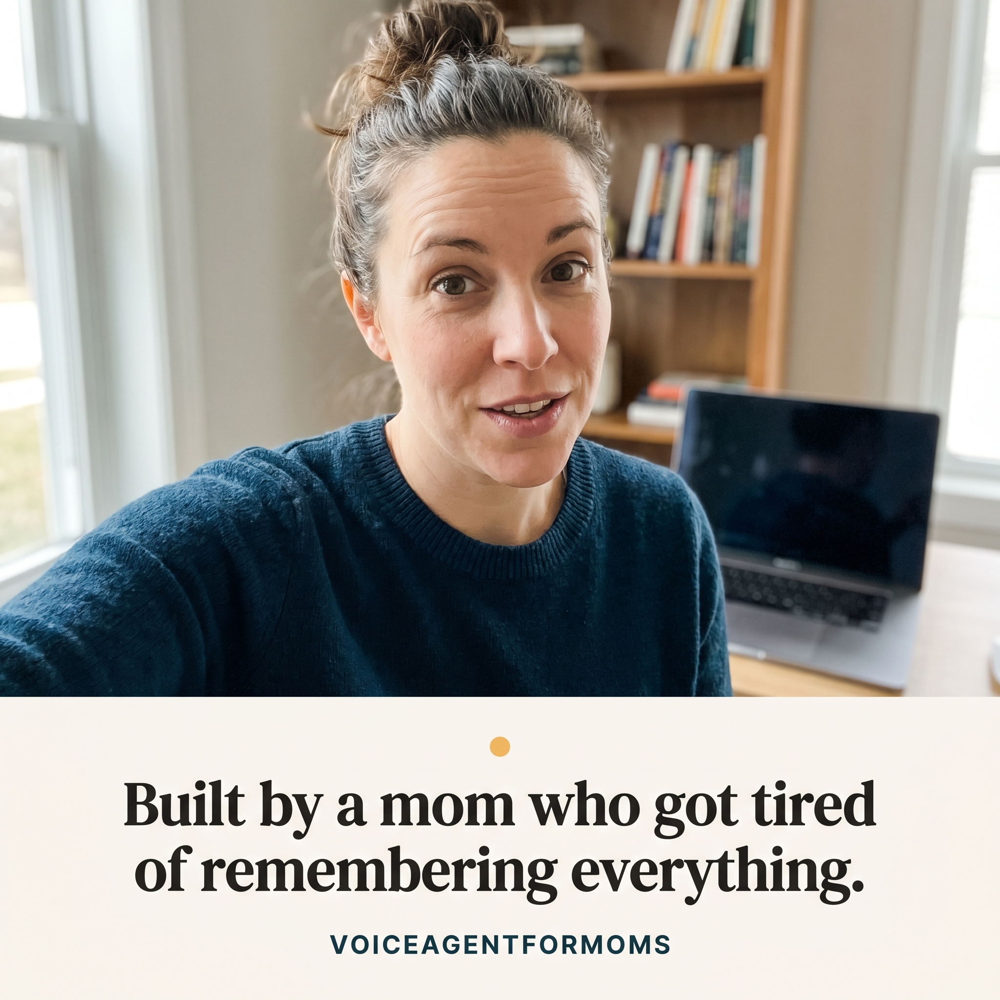
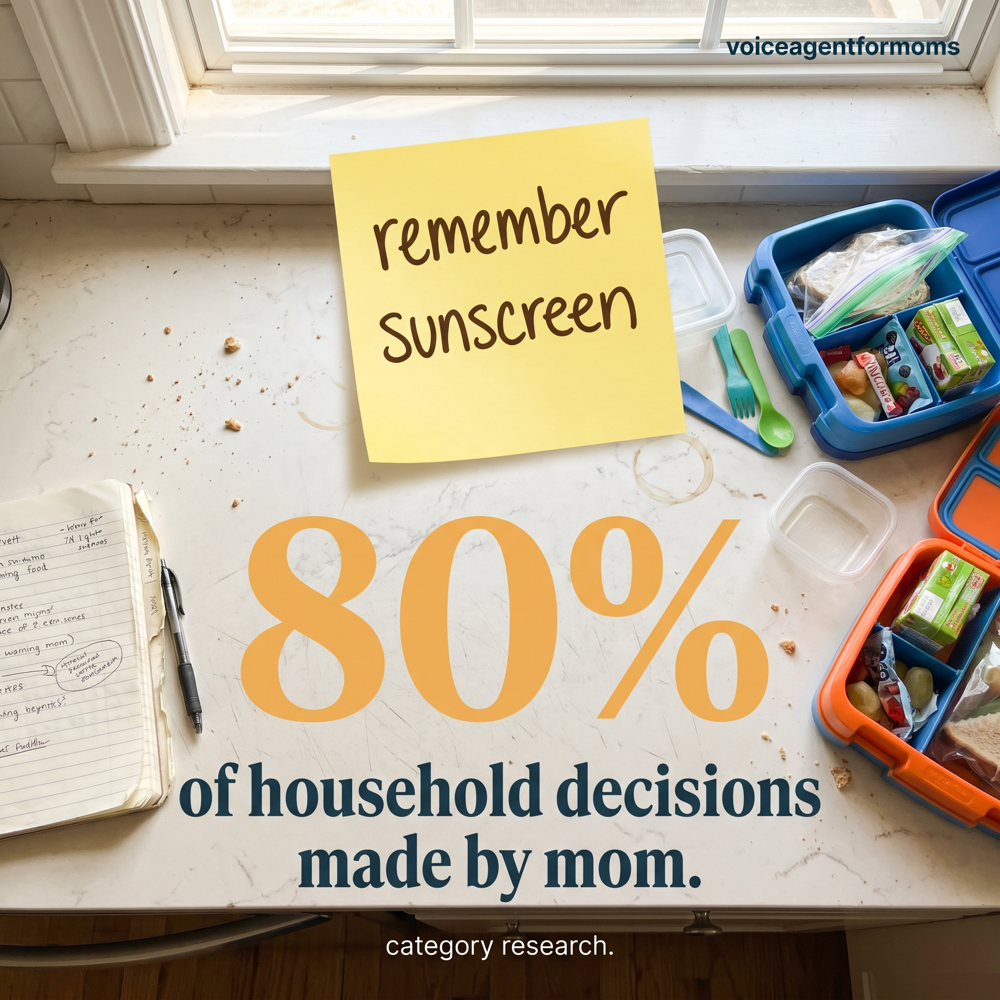
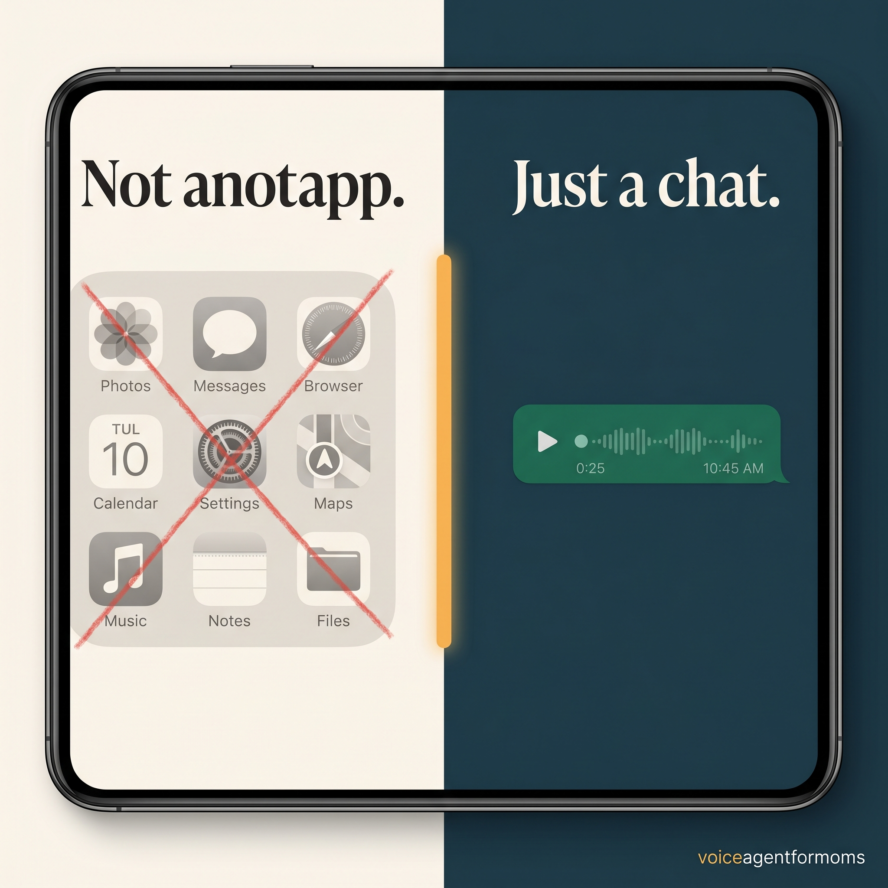
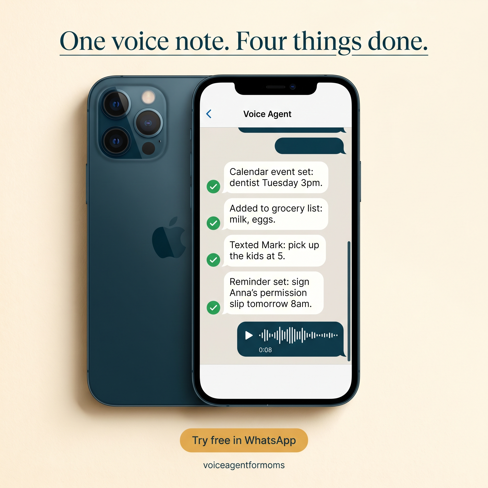
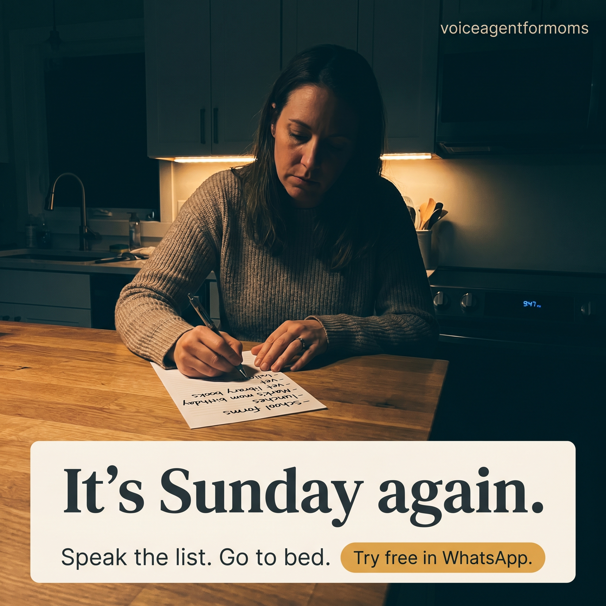

9 image ads, 9 UGC video scripts, and a targeting plan that splits Facebook's mature moms from Instagram's first-time moms. Ad to WhatsApp deep link, no landing page in between, no friction added.
9 image ad concepts, 9 UGC video scripts, and the targeting plus pacing plan that hits the 5-user validation target on $5,000.
Selfie-cam mom scenes, kitchen and bedroom and Sunday-night moments. Every concept hits a different pain mode. Ready for Higgsfield nano banana with brand block, scene, and overlays written out.
Three times the angle coverage of a standard test. Each script targets a distinct buyer: the 3am wake-up, the kitchen-mid-thought, the ChatGPT-skeptic, the tried-everything mom. Hook, body, CTA, and filming brief per script.
Facebook for mature moms, Instagram for first-time moms, $5,000 split with daily pacing to hit 5 real users by day 14. Ad to WhatsApp deep link, no landing page friction.
"I just want to say it once and have it be handled."
Duckbill, Yohana, and Milo all require typing or scheduling. None of them lead with the voice angle. Speaking is 3 to 4 times faster than typing, and one sentence does four things for the user.
Moms already open WhatsApp 23 plus times a day for the school group chat. Ad to WhatsApp deep link is zero install, zero password, zero new icon to remember.
Facebook still indexes for mature moms with multiple kids. Instagram indexes for younger and first-time moms. The funnel runs both with separate creative angles, not the same ad pushed across both.
Same product. Different language, different scenes, different ad sets per platform. The algorithm splits the spend; the creative does the avatar-level segmentation.
Carries the calendar, the school WhatsApp groups, the grocery list, the doctor appointments. Has tried paper planners, Notion, shared Google Calendar, Cozi.
Lives in WhatsApp and Instagram DMs already. Has tried ChatGPT for life admin. Frustrated that AI gives advice without doing anything.
Higgsfield nano banana prompts are written in full. Click any concept for a fullscreen view once the renders land.

Real kitchen scene, mom mid-thought, toddler tugging shirt, sage banner reads "Drowning yet?" Calls out the daytime forgetting moment.

Top-down phone on a wooden table, stopwatch at 5 seconds, headline "Speak it once. Save 25 seconds." The voice-is-faster insight.

Dim bedroom, 3:14am clock, phone screen glow on her face. "Awake again. Why." Hits the night-time forgetting moment.

UGC selfie of the founder in deep teal, home-office corner. "Built by a mom who got tired of remembering everything." Credibility ad.

Top-down kitchen counter with lunchboxes and a sticky note. Giant amber "80%" stat: "of household decisions made by mom." Validates the problem.

Split frame: greyed-out app icons with a strikethrough on the left, clean WhatsApp chat on the right. "Not another app. Just a chat."
Split frame: mom on couch holding her phone after a voice note, cream copy panel with "Say it once. Have it handled." Amber CTA: "Try free in WhatsApp."

iPhone on cream backdrop showing the actual WhatsApp chat: voice note in, four action confirmations out. "One voice note. Four things done."

Sunday 9:47pm, kitchen island, dim warm light, paper list visible. "It's Sunday again. Speak the list. Go to bed." Drives last-click action.
Each script is a complete shoot brief: hook, body, CTA, environment, framing, lighting, energy, and wardrobe. The right two or three win at $5k spend; the rest get killed without ego.
The cognitive-load forgetting that wakes you up at 3am is a product problem, not a personal failing.
It's 3:14 in the morning and I am wide awake because I just remembered Anna's permission slip is due tomorrow. My brain has too many tabs open. I haven't slept through the night since she started kindergarten.
This happens to me at least twice a week. I lie there running the list. Permission slip, Mark's mom's birthday, the vet, the grocery delivery window. I try to type it into the Notes app but then I'm awake for another hour. I tried sticky notes. I tried Cozi. I tried writing a list before bed so my brain would let go. None of it works because the list isn't the problem. The problem is I'm the only person in this house who knows what is happening.
Someone showed me this thing two weeks ago. It's a voice agent that lives inside WhatsApp. You send it one voice note. You say everything you're worried about forgetting. It sets the calendar event, adds to the grocery list, texts your partner the thing they need to do, and reminds you in the morning. I tried it the next time I was up at 3am. I held my phone up, I said "permission slip, vet appointment, Mark's mom's birthday next week," and I went back to sleep.
I slept through the night for the first time in I don't know how long.
If you wake up at 3am running the list, here's what you do. Tap the button below. WhatsApp will open with a message ready to send. Say one sentence about what's in your head right now. The agent does the rest. It's free. No card. No app to install. You're already in WhatsApp anyway.
Standing in the kitchen forgetting what you were just doing is not a memory problem, it's an overload problem.
I'm standing in the kitchen right now and I have completely forgotten what I came in here to do. My toddler is pulling on my pants. There are three things I'm supposed to be remembering and I cannot get to any of them.
This is my entire day. I walk into a room. I forget. I walk back out. I remember. I walk back in. I forget again. It's not me. I'm not getting worse at this. I am running an unstaffed logistics operation for a family of four and the operations team is just my brain.
The thing that actually changed it for me is this voice agent that lives in WhatsApp. I don't have to remember anything anymore. When something comes into my head, I open WhatsApp, hold the record button, and just say it. "Dentist Tuesday at three. Add milk and eggs. Tell Mark to grab the kids at five. Remind me about Anna's slip in the morning." One sentence. Four things land in the right place. The calendar gets the dentist. The grocery list updates. My husband gets a text. I get a reminder tomorrow morning.
I used to have lists in five different places and none of them were right. Now I just say it once and have it be handled.
If you walk into rooms and forget what you came in for, this is for you. Tap the button below. WhatsApp will open. Send one voice note. See what happens. Free. No app. No card. Stop carrying it in your head.
The unfairness of being expected to remember everyone's everything is not solved by asking the other person to remember. It's solved by something else remembering for both of you.
Yesterday I asked my husband to remember to pick up the kids from soccer. He forgot. And somehow I am the bad guy for being upset.
This is the thing nobody warns you about. The mental load isn't just remembering everything. It's also being the only person who remembers, and then being told you should have just reminded him. Which is its own task. Which means I'm still the one doing it.
I tried shared calendars. He doesn't check it. I tried texting him. The text gets lost in our chat. I tried writing it on the fridge. He walked past it three times.
The thing that finally works is this voice agent in WhatsApp. When I have a thing I need him to do, I say it once into a voice note. The agent texts him directly. Not a forwarded calendar invite. An actual text message in his thread, with the time and what he needs to do. He doesn't forget because the message is right there on his phone. And I don't have to track whether he saw the calendar, because I never sent a calendar invite, I just said one sentence into my phone.
It is the first thing that has actually moved something off my plate.
If you're tired of being the only person who knows what is happening, try this. Tap the button below, send one voice note, watch your husband get the text directly. Free. No app. No card. You'll feel it within the first five minutes.
ChatGPT is great at writing things. It is not a household operating system. The voice agent for moms is.
I tried using ChatGPT to manage my life as a mom. Let me tell you what happened.
I typed into ChatGPT, "I have a meeting at three, Anna has a dentist on Tuesday, I'm out of milk, and my husband needs to pick up the kids." It gave me a beautifully formatted bullet-point summary of my own life. It told me I should consider using a calendar.
I already knew. I have a calendar. The problem isn't knowing the things. The problem is the things have to actually get into the right place. ChatGPT can talk to me. It cannot text my husband. It cannot add to my grocery list. It cannot set my calendar. It is a chatbot. I need a household.
This voice agent for moms is different. It's not a chatbot. You say one sentence into WhatsApp. It actually does the things. The calendar event appears. The grocery item gets added to your list. Your husband gets a text. You get a reminder in the morning. One sentence in, four things done.
It's the difference between being told what to do and having it done.
If you've been using ChatGPT for life admin and getting beautiful bullet points but no actual help, switch. Tap the button below. Send one voice note. See an AI actually do something for once. Free, in WhatsApp, no app to install.
App sprawl is the secret reason the mental load is unsolvable. The solution isn't a sixth app. It is having no app at all.
I have lists in five different apps and none of them are right. Notes app. Reminders. Cozi. Sticky notes on the fridge. Texts to myself I never read.
Every time I see another app advertised as the thing that will finally help moms, I think, where is this going to live? On the fifth screen of my home screen, between the other apps I forgot about? My problem is not that I don't have a tool. My problem is I have too many tools.
This voice agent doesn't ask me to install anything. It lives in WhatsApp. The app I already open thirty times a day for the school group chat. When I have a thing on my mind, I just go to that thread. I hold the record button. I say it. Done.
No new login. No new password. No new icon I forget about. No syncing two calendars. No checking five lists. One sentence into WhatsApp, four things land. The dishes app does not solve having too many dishes apps. This solves having too many dishes apps by not being one.
If you have five different lists right now and zero of them are working, stop adding lists. Tap the button below, send one voice note in WhatsApp, see what happens. Free. No new app. Promise.
Speaking is roughly 3 to 4 times faster than typing. A voice note that takes 5 seconds replaces a typed task that takes 30.
I'm going to show you why typing your to-do list is the slowest possible way to do it.
Watch this. I'm going to type a normal mom task. Permission slip, dentist Tuesday, text my husband to pick up the kids. Three things. I have to open the right app. I have to type each line. I have to figure out which app to add the calendar event to. I have to remember to text my husband separately.
That took me, what, almost a minute.
Now I'm going to say the same thing. "Sign Anna's permission slip tomorrow morning, dentist Tuesday at three, tell Mark to grab the kids at five." Five seconds. And the difference is the voice note didn't just record what I said. The voice agent in WhatsApp turned it into a calendar event, a reminder, and an actual text to my husband. One sentence in. Three things done in the time it took me to start typing.
A mom in this country makes 80% of household decisions. If each one of those takes thirty seconds to type and five seconds to say, the day gets a lot of itself back.
If you're typing everything, stop typing. Tap the button below, send one voice note, see how much faster your life works in WhatsApp. Free. Try it once.
Sunday night is the moment the week lands on you. A voice agent gives you back Sunday night.
It's 9pm on a Sunday and I am sitting at the kitchen island writing the list for the week. School lunches. Dentist. Library books. Mark's mom's birthday. The vet. I have not had a thought of my own in weeks.
Every Sunday I do this. I sit down, I run the week, I write everything I can think of, and I still wake up Monday afraid I missed something. The list is not actually the work. The work is carrying the list around in my head all week, hoping I remember to look at it at the right moments.
A friend of mine started using a voice agent in WhatsApp. She said it changed her Sunday nights. So I tried it. I sat down at 9pm last Sunday and I just talked to my phone for two minutes straight. School lunches, dentist, library, Mark's mom's birthday on Thursday, vet on Friday, grocery delivery for Wednesday. Everything I would normally write on paper, I just said out loud.
By the time I got up from the island, my calendar was set for the week, my grocery list was full, my husband had three texts in his inbox with the things he needed to handle, and I had reminders queued for each morning. I went to bed at 9:20pm on a Sunday for the first time in years.
If your Sunday nights are list nights, give this Sunday night to yourself. Tap the button below, send one voice note in WhatsApp, dump the week out of your head. Free. Five minutes total.
Show, don't tell. The product is its own pitch when you watch it work.
I'm going to do this in real time. Watch what happens when I send one voice note.
Here's my phone. I'm opening WhatsApp. The agent thread is right there with the school group chat and my mom and my husband. I hold the record button. I'm just going to say what's in my head.
"Sign Anna's permission slip tomorrow morning. Add eggs and bread to the grocery list. Tell Mark to pick up the kids at five. Set a reminder for me about the vet on Friday at nine."
I'm releasing the button. Send.
Watch the screen. The agent is replying. There's the calendar event for the permission slip, scheduled for tomorrow morning at 8am. Eggs and bread, added to my grocery list. Mark is getting a text right now in his thread, watch, sent. Vet reminder set for Friday at 9am.
That voice note was eleven seconds long. It did four things. I did not open four different apps. I did not write anything down. I did not text my husband. The agent did it. It's not a script for me to write later. The work is already done.
If you want to see this happen in your own WhatsApp, tap the button below. Send one voice note. Free. Try it once. You'll feel the difference before you even put your phone down.
Most mom-tech tools fail for the same structural reason. Naming the reason is the credibility move.
I have tried Cozi, Yohana, Hearth, Notion, and four different family calendar apps. Here is why none of them moved the mental load.
The problem is they all assume I have time to sit down and set them up. Configure the calendar. Add the family members. Categorize the chores. Train the assistant. Type the lists. Every single one of those tools wanted me to do an hour of admin to save thirty minutes a week. The math does not work for a mom.
The reason the voice agent for moms is different is that the setup is one voice note. The first time I used it, the setup was the first task. I said "remind me about Anna's dentist Tuesday, add milk to the list, text Mark to pick up the kids." That was the onboarding. There was no configuration. No tutorial. The first interaction was the work, and the work was already done.
It lives in WhatsApp because every mom is already in WhatsApp twenty-three times a day for the school group chat. There is no new app. There is no learning curve. There is no team to manage. It is one chat thread. You say a sentence. The thing happens.
That is the difference. The other tools want you to build a system. This one is already a system. You just talk to it.
If you've tried every mom app and given up, try one more thing. This one's free, it's in WhatsApp, and the setup is the first message. Tap the button below. Send one voice note. See if the math works for you.
Every ad CTA opens WhatsApp directly with a prefilled "Hi" message to the agent. A landing page in between would only add friction. The first thing the prospect does is the product itself: send one voice note and watch four things happen.
This is faster, lower friction, and a stronger demo than any landing page could simulate. We instrument click-to-WhatsApp and first-voice-note as the two conversion events.
FB to mature moms, IG to younger moms, with avatar-matched creative.
One tap opens WhatsApp with a prefilled message to the agent.
Prospect speaks one sentence describing what's on her plate.
Calendar, grocery, partner text, reminder. All under 60 seconds.
One of the 5 real users you need to validate the concept.
Spend is split 60/40 between Instagram and Facebook to bias toward the tech-fluent cohort first, with daily reallocation based on which creative is delivering activated users (defined as completed first voice notes), not just clicks.
30-minute call, no obligation. We walk through everything in this page together and decide what to launch first.
30-minute call. You see everything in this page in full, we align on the public brand name, any palette substitutions, and which video scripts to film first.
Three to four UGC mom creators get the filming briefs. Scripts are short and tested for natural delivery. First batch back in 5 to 7 days.
Ad accounts configured, audiences uploaded, creative tested. Daily optimization on activated-user cost, not click cost. Day 14 readout against the 5-user target.
Verifiable campaigns we have managed in the past 18 months. Different niches, same playbook.

Niche B2B recruiting firm. Full funnel built from zero, three video angles tested in week one. 145 qualified applications in 14 days for under 8 euros per lead.

Service business with seasonal demand. Calendar filled with paying recurring clients in under a month.

Local home service. Custom-built funnel that booked 50 recurring service contracts in 14 days.
Because a cold email saying "we can help you run ads" is easy to ignore. A complete, live funnel built specifically for your validation goal is not. We do the work first. If you see the quality and want to run it, we talk. If not, you keep everything and we part ways. That deal only makes sense if the work is genuinely good, which keeps us accountable.
You have everything in front of you right now: the ads, the scripts, the targeting, the KPI plan. You can evaluate the quality before a single conversation. The case studies above are verifiable. The funnel is built around your stated metric, 5 activated users in 14 days, not vanity clicks. If we miss the metric in the first week, we kill the losing creative and shift to whatever is signaling. That is the entire deal.
Meta's algorithm needs 3 to 5 days of learning. First voice notes from real users typically arrive in week one. The 5-user validation target is achievable inside 14 days at the $5k spend level, with a one-week buffer for re-creative if the first batch underperforms. We confirm the realistic floor on the call.
Access to your Meta Business account. WhatsApp Business API endpoint or the deep link that opens the agent. A go-ahead to film the UGC scripts (we handle creator sourcing if you don't have someone). And the public brand name for the wordmark. That is it. We handle ad account setup, audience config, creative production, and daily optimization on activated-user cost.
You kill the experiment and we walk away. That is the explicit validation logic in your brief and we respect it. Your team gets the data on why the angles didn't land, which is valuable input for the next product idea. Our fee is structured so the work is delivered up front. If the test fails, you don't owe us more. That is the deal.

I run paid social funnels for founders who need real signal, fast. The work in front of you is a real example of how we approach a launch: complete creative, locked anchors, targeting that respects the avatar split, and a metric we agree on before we spend a euro.
You're a founder validating ideas with paid ads. I am the operator who runs them. The math is simple. If the work hits, we keep going. If it doesn't, you keep the work and we both move on.
Let's get this live2-3 weeks is a tight window. The faster we get the call done, the more of the window we save for actual ad spend. Pick a time below.